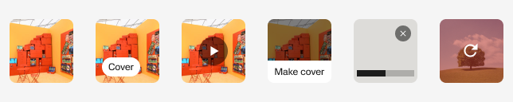
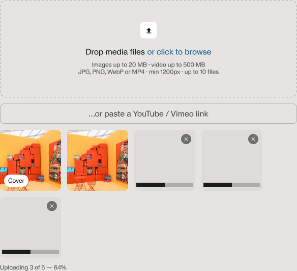

Syno · Product design · 2026 · Продукт запущен
Syno: арт-платформа с нуля
Syno объединяет художников, события, площадки и опенколы на Кипре. Я спроектировала все разделы нового сервиса: от поиска искусства и публичных портфолио до подачи заявок и личного кабинета. Макеты в Figma и кодовый прототип развивались параллельно: в них проверяли связанные сценарии и уточняли поведение продукта. Платформа запущена на syno.art; разделы организаций и событий ещё дорабатываются.
- Для посетителя
- Найти художника или событие
- Для организации
- Страница и события
Проблема
На старте не было ни продукта, ни его структуры. Предстояло определить, как люди будут искать художников и события, как художник соберёт портфолио и подаст заявку, а организация разместит программу. Эти сценарии должны были работать с одними и теми же профилями, работами и событиями.
Задача
Спроектировать публичные разделы и личный кабинет для разных ролей, продумать публикацию и подачу заявок, собрать десктопные и мобильные версии. Проверять поведение в коде и передавать разработке макеты вместе с правилами состояний и ошибок.
Пользователи
Посетители, кураторы и потенциальные клиенты ищут события и смотрят работы. Художники публикуют портфолио и подаются на опенкол. Представители организаций ведут страницы площадок и размещают события. Один аккаунт может использоваться в нескольких ролях.
Мой вклад
UX/UI всех разделов: главная, Art Map, Artists, Stories, Open Call, профиль, My Syno и организации. Кодовый прототип, десктоп и мобильные версии, общая дизайн-система, спецификации и дизайн-ревью разработки.
Макеты и прототип развивались параллельно
Я проектировала сервис в Figma и одновременно развивала интерактивный прототип в коде с помощью Claude Code и Codex. Пока команда собирала продукт, в прототипе мы проходили сценарии, проверяли состояния и поведение на разных устройствах. По результатам уточняла макеты и спецификации.
В прототипе проверяли весь путь: возвращение к черновику, повторную загрузку после ошибки, сохранение события через вход, отправку заявки и её дальнейшее состояние. Это позволяло обсуждать с командой конкретное поведение каждого шага.
В реестре работы имеют общую ширину и сохраняют собственные пропорции. Высоту строки задаёт самая высокая работа, а нижний отступ остаётся одинаковым. Это правило проверяли в коде на произведениях разных форматов.
Figma
Макеты, визуальная система, компоненты и описание согласованных решений
Кодовый прототип
Переходы, данные, состояния, ошибки и адаптивное поведение
Разработка
Реализация продукта и сверка работающей сборки с макетами
Проверки сценариев с командой и дизайн-ревью. Ссылки ниже открывают демонстрационные прототипы.
Основные экраны показаны с демонстрационным наполнением: профили художников вымышлены. Авторы и источники изображений.
1. От события к художнику
Публичными разделами пользуются люди с разными целями: посетитель выбирает выставку, куратор ищет художника, потенциальный клиент смотрит работы. В Artists можно отфильтровать реестр и открыть портфолио. Art Map показывает события и площадки по месту и времени. Из Stories можно перейти к упомянутому художнику или событию.
На карте сначала выбирают категорию, затем уточняют поиск её фильтрами. Пин связан с карточкой в списке, страница события показывает даты и место. На телефоне нажатие пина сначала открывает краткую карточку: человек может посмотреть основные сведения и затем открыть подробности.
Для посетителя. У выбранного события есть даты, место проведения и участники. Их можно посмотреть до визита, а профиль художника открыть из связанных материалов.
Сохранение и возвращение
Событие или работу можно сохранить через Save, художника или организацию — добавить через Follow. Для этого достаточно личного аккаунта; создавать профиль художника не требуется. Все выбранные объекты доступны в избранном My Syno.
Если человек нажал Save до входа, после авторизации он возвращается к тому же объекту, который теперь сохранён. В избранном скрытые и удалённые объекты остаются с пояснением, чтобы человек понимал, почему их нельзя открыть.
Для посетителя и куратора. Выбранные события, работы и художники остаются в кабинете. После входа не нужно повторять сохранение.
2. Одно портфолио для разных задач
Портфолио — самостоятельная часть сервиса. Художник добавляет работы, описывает свою практику и публикует страницу в реестре. Я спроектировала и публичную страницу, которую видят посетители, и редакторы, в которых художник её собирает.
Заполнение портфолио
Для работы можно загрузить изображения или видео и заполнить сведения о ней. Название и медиа остаются рядом, дополнительные поля не мешают начать. Main info, Statement и CV редактируются в своих разделах.
Публиковать и управлять видимостью
Художник начинает с частного черновика. Чеклист заранее показывает условия публикации: выбранные направления работы, Statement и хотя бы одна сохранённая работа. После публикации страница появляется в реестре. Её можно снять с публикации, сохранив работы и сведения в кабинете, а затем опубликовать снова.
Для художника. Портфолио можно наполнять и обновлять независимо от участия в опенколе. Владелец видит состояние страницы и управляет тем, когда она доступна посетителям.
3. Заявка из готового портфолио
В заявке художник собирает материалы для конкретного опенкола. Я спроектировала четыре шага: сведения о художнике, выбор работ, ответы на вопросы и проверку перед отправкой. Если профиль уже есть, его данные и работы используются в заявке. Новый художник заполняет необходимые сведения во время подачи.
Черновик, отправка и дальнейшее состояние
Заявку можно сохранить и продолжить позже. Для случая, когда приём завершился до отправки, предусмотрен отдельный экран. После подачи заявка доступна в кабинете со своим состоянием. Отправленные работы, Statement и ответы сохраняются копией: последующие правки портфолио не меняют материалы, которые получило жюри.

Для художника. Работы для заявки не нужно загружать повторно. Черновик, отправленная заявка и результат рассмотрения различаются, а портфолио можно продолжать редактировать после подачи.
4. Площадка и её программа
Разделы организаций и событий ещё дорабатываются в продукте. В прототипе представитель организации создаёт страницу площадки или получает доступ к существующей, заполняет описание, фотографии и контакты, указывает адрес и часы работы и добавляет события от имени организации.
Я спроектировала создание страницы, её редактирование, доступ для команды и форму события. Эти инструменты наполняют публичные разделы сервиса: посетители видят площадку и её программу на Art Map.
Для организации. Спроектирован единый кабинет для сведений о площадке, её событий и доступа команды. Сценарии показаны в прототипе; реализация разделов продолжается.
Общие компоненты и передача в разработку
Для всех разделов я развивала одну библиотеку компонентов с токенами и адаптивными размерами. Общие редакторы и загрузчики используются в профиле, заявке и страницах организаций. Спецификации дополняют макеты условиями публикации, ограничениями полей и поведением при ошибках.


Для разработки. Команда получила макеты всех разделов, общие компоненты и спецификации. Поведение переходов, ошибок и адаптива можно было проверить в прототипе.
О платформе
Страница About объясняет, как карта, реестр художников и программа опенколов связаны с задачей Syno. Общая сетка и типографика объединяют публичные разделы.
Мобильная версия
На телефоне сохраняются те же сценарии. На карте сначала открывается краткая карточка события, редакторы занимают весь экран, а шаги заявки и состояния профиля остаются доступны в кабинете.
Результат
Syno запущен. Продукт доступен на syno.art. Разделы организаций и событий ещё дорабатываются.
Спроектированы все разделы сервиса. Публичный реестр, карта, Stories, портфолио, подача на опенкол, кабинет и организации.
Одно портфолио для нескольких задач. Художник представляет работы публично и использует их в заявке.
Выбранное остаётся в кабинете. События, работы, художники и площадки доступны в избранном после сохранения или подписки.
Поведение проверялось во время проектирования. Figma и кодовый прототип развивались параллельно с разработкой продукта.
Команда получила материалы для реализации. Адаптивные макеты, библиотеку компонентов, спецификации и работающий прототип.
Что дополнить перед публикацией кейса
- Состав команды и период работы.
- Первый проход Art Map собран на 60 секунд: вся выдача, Events, Nicosia, Map/List, событие, галерея и профиль художника. Остальные видеосценарии ещё не собраны.
- Согласовать финальный набор кадров. Основные страницы и состояния берутся из кодового прототипа; компоненты и отдельные состояния показаны макетами из Figma.
- Добавить подтверждённую обратную связь или показатели использования, если они доступны. Текущий результат описывает запуск, спроектированные возможности и передачу без неподтверждённых метрик.